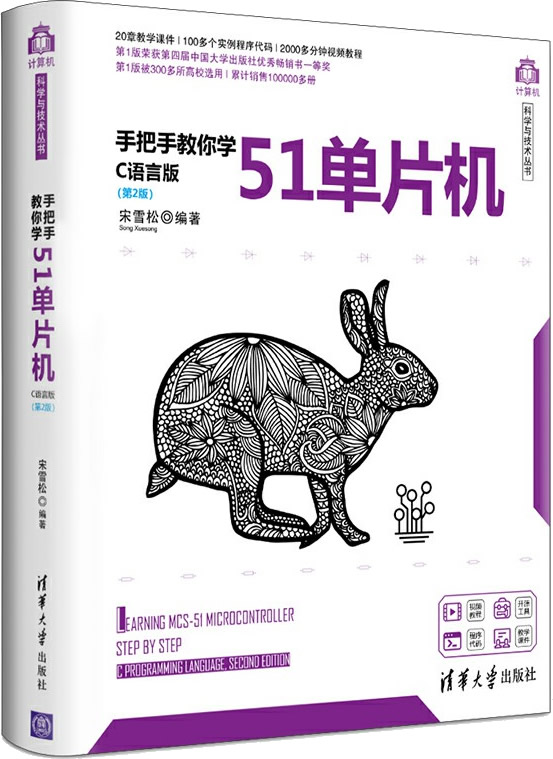

首页 > 书籍下载
《手把手教你学51单片机(C语言版)》第2版PDF下载（高清完整版）
|  | 作者：宋雪松 |
| 出版时间：2020年06月01日 | |
| 出版社：清华大学出版社 | |
| 书号ISBN：9787302549994 | |
| 总页数：448 | |
| 总字数：62.9W |
这是一本非常优秀的 51单片机入门书籍，开发语言为 C 语言，超过 300 多所大学把它作为课堂教材，已经累计销售了 10W 多册，非常受欢迎。
这里提供的是《手把手教你学51单片机（第2版）》C语言版的高清 PDF 下载，内容完整，附带目录标签。
这本书最大的特点是注重实践，书中包含 80 多个实践案例，从成功点亮一个小灯（相等于学习编程语言时输出“Hello, World!”），项目难度不断增加，到最终制作出一个多功能电子钟。这本书既适合刚刚接触单片机开发的初学者，同时也适合电子行业的从业技术人员。
自出版之日起，这本书赢得了众多读者的好评，下面是一位读者给出的评价：
跟着学了几章后才来评论的，个人感觉讲解还是挺细致的，关键是示例代码的质量很高，不像之前看过的某书上那种就罗列了几行代码，告诉你这样就能驱动某个模块了，可我还是不知道怎么用它来解决实际问题。相比较之下，这本书在每章开始也是讲解基础原理，用简单的代码告诉你怎么用它，后面基本都会有一个从实际需求出发而精心设计的实例，示范怎么实际解决一个项目，感觉是想培养读者的一种解决实际问题的方法和规范，希望通过学习真能提高自己的实战水平吧。
书籍目录
- 第1章 如何学习单片机
- 1.1 学什么类型的单片机
- 1.2 学习单片机的方法
- 1.3 单片机学习的准备工作
- 1.4 单片机开发软件环境搭建
- 1.5 Keil基本概况介绍
- 1.6 答读者问
- 第2章 点亮你的LED
- 2.1 单片机的内部资源
- 2.2 单片机小系统
- 2.3 LED小灯
- 2.4 程序代码编写
- 2.5 程序下载
- 2.6 练习题
- 第3章 硬件基础知识学习
- 3.1 电磁干扰
- 3.2 去耦电容的应用
- 3.3 三极管在数字电路中的应用
- 3.4 74HC138三八译码器的应用
- 3.5 LED闪烁程序
- 3.6 练习题
- 第4章 C语言基础以及流水灯的实现
- 4.1 二进制、十进制和十六进制
- 4.2 C语言变量类型和范围
- 4.3 C语言基本运算符
- 4.4 for循环语句
- 4.5 while循环语句
- 4.6 函数的简单介绍
- 4.7 Keil软件延时
- 4.8 流水灯程序
- 4.9 练习题
- 第5章 定时器与数码管基础
- 5.1 逻辑电路与逻辑运算
- 5.2 定时器的学习
- 5.3 数码管的学习
- 5.4 练习题
- 第6章 中断与数码管动态显示
- 6.1 C语言的数组
- 6.2 if语句
- 6.3 switch语句
- 6.4 数码管的动态显示
- 6.5 单片机中断系统
- 6.6 练习题
- 第7章 变量进阶与点阵LED
- 7.1 变量的作用域
- 7.2 变量的存储类别
- 7.3 点阵的初步认识
- 7.4 点阵的图形显示
- 7.5 点阵的动画显示
- 7.6 练习题
- 第8章 函数进阶与按键
- 8.1 单片机小系统
- 8.2 函数的调用
- 8.3 函数的形式参数和实际参数
- 8.4 按键
- 8.5 简易加法计算器
- 8.6 练习题
- 第9章 步进电机与蜂鸣器
- 9.1 单片机I/O口的结构
- 9.2 上下拉电阻
- 9.3 28BYJ 48型步进电机详解与实例
- 9.4 蜂鸣器
- 9.5 练习题
- 第10章 实例练习与经验积累
- 10.1 数字秒表实例
- 10.2 PWM知识与实例
- 10.3 交通灯实例
- 10.4 51单片机RAM区域的划分
- 10.5 长短按键的应用
- 10.6 练习题
- 第11章 UART串口通信
- 11.1 串行通信的初步认识
- 11.2 RS 232通信接口
- 11.3 USB转串口通信
- 11.4 I/O口模拟UART串口通信
- 11.5 UART串口通信的基本应用
- 11.6 通信实例与ASCII码
- 11.7 练习题
- 第12章 指针基础与1602液晶的初步认识
- 12.1 指针的概念与指针变量的声明
- 12.2 指向数组元素的指针
- 12.3 字符数组和字符指针
- 12.4 1602液晶的认识
- 12.5 练习题
- 第13章 1602液晶与串口的应用实例
- 13.1 通信时序解析
- 13.2 1602整屏移动
- 13.3 多.c文件的初步认识
- 13.4 计算器实例
- 13.5 串口通信机制和实用的串口例程
- 13.6 练习题
- 第14章 I2C总线与E2PROM
- 14.1 I2C时序初步认识
- 14.2 I2C寻址模式
- 14.3 E2PROM的学习
- 14.4 I2C和E2PROM的综合实验学习
- 14.5 练习题
- 第15章 实时时钟DS1302
- 15.1 BCD码的概念
- 15.2 SPI时序初步认识
- 15.3 实时时钟芯片DS1302
- 15.4 复合数据类型
- 15.5 电子钟实例
- 15.6 练习题
- 第16章 红外通信与DS18B20温度传感器
- 16.1 红外线的基本原理
- 16.2 红外遥控通信原理
- 16.3 NEC协议红外遥控器
- 16.4 温度传感器DS18B20
- 16.5 练习题
- 第17章 模数转换A/D与数模转换D/A
- 17.1 A/D和D/A的基本概念
- 17.2 A/D的主要指标
- 17.3 PCF8591的硬件接口
- 17.4 PCF8591的软件编程
- 17.5 A/D差分输入信号
- 17.6 D/A输出
- 17.7 简易信号发生器实例
- 17.8 练习题
- 第18章 RS 485通信与Modbus协议
- 18.1 RS 485通信
- 18.2 Modbus通信协议介绍
- 18.3 Modbus多机通信例程
- 18.4 练习题
- 第19章 实践项目： 多功能电子钟
- 19.1 类型说明
- 19.2 头文件
- 19.3 条件编译
- 19.4 项目实战
- 19.5 练习题
- 第20章 扩展实例： 超声波测距
- 20.1 超声波测距原理
- 20.2 超声波测距硬件准备
- 20.3 超声波测距并在数码管上显示
- 20.4 优化超声波测距的精度
- 附录
- 附录A 单片机开发常用工具
- 附录B ASCII码字符表
- 附录C C语言运算符及优先级
- 附录D KST 51开发板原理图
书籍下载
一键登录，免费下载完整版 PDF，文件名称：《手把手教你学51单片机(C语言版)》第2版.pdf